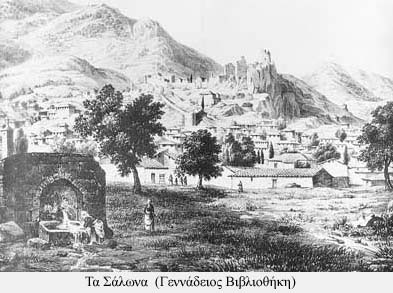

|
Τα Σάλωνα αποτέλεσαν αξιόλογο οικονομικό κέντρο την περίοδο αυτή. Ήταν μια από τις μεγαλύτερες αγορές της περιοχής, τόπος βιοτεχνικής παραγωγής και κέντρο διαμετακομιστικού εμπορίου για αγορές του εσωτερικού ή του εξωτερικού. Στα τέλη του 18ου αιώνα μεγάλη ακμή γνώρισε η βιοτεχνία επεξεργασίας δερμάτων στη συνοικία Χάρμαινα. Η ελιά κατείχε την κύρια θέση στις δενδροκαλλιέργειες και το λάδι αποτελούσε το βασικό προϊόν εξαγωγής μαζί με τα σιτηρά, το μαλλί, το βαμβάκι και τα δέρματα. Το εξαγωγικό εμπόριο διευκολύνθηκε λόγω του λιμανιού της περιοχής στον κορινθιακό κόλπο, του Γαλαξειδίου.
«Οι κολυμβάδες», μαρτυρία περιηγητή
«…σε μια πηγή που λέγεται Χάρμαινα», μαρτυρία περιηγητή
Η ελιά βασικό προϊόν καλλιέργειας και στη Μεσσηνία
|
|